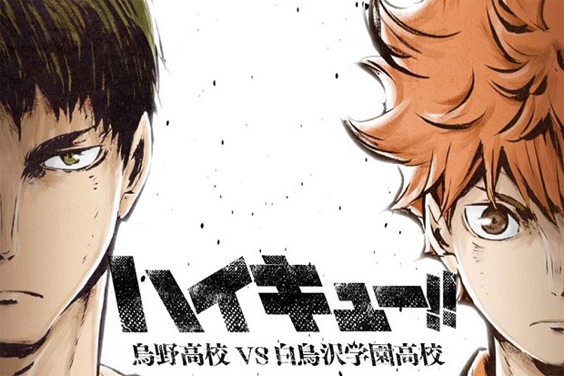

3°SEASON

SHIRATORIZAWAVSKARASUNO
La terza serie ci parla esclusivamente del match per accedere al torneo nazionale,
e non è un match qualsiasi, dato che i Corvi della Karasuno dovranno vedersela con le Aquile della temibile Shiratorizawa,
squadra formidabile che aveva già partecipato varie volte ai nazionali.
In un incontro emozionante, durato dieci episodi,
avremo modo di apprezzare la differenza tra due strategie di gioco:
da una parte, la forza devastante della Shiratorizawa, che gioca di "pura ignoranza", basata solo sulla forza fisica e gira solamente intorno all'asso,Ushijima;
dall'altra la coralità di un gruppo che esalta i singoli individui uno alla volta e sono tutti essenziali.
Il risultato finale, che arriverà dopo un lungo Tie-Break,
non sarà così ovvio, e farà emergere un personaggio che, fino a poco tempo prima, non era esattamente il più entusiasta dei giocatori,
Tsukishima Kei.
2°STAGIONE←